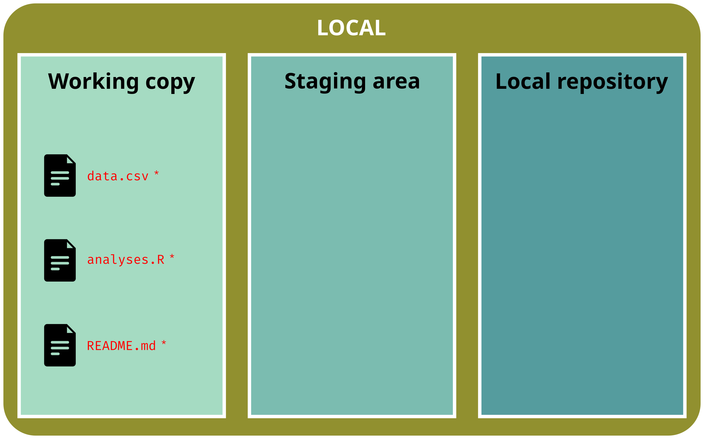
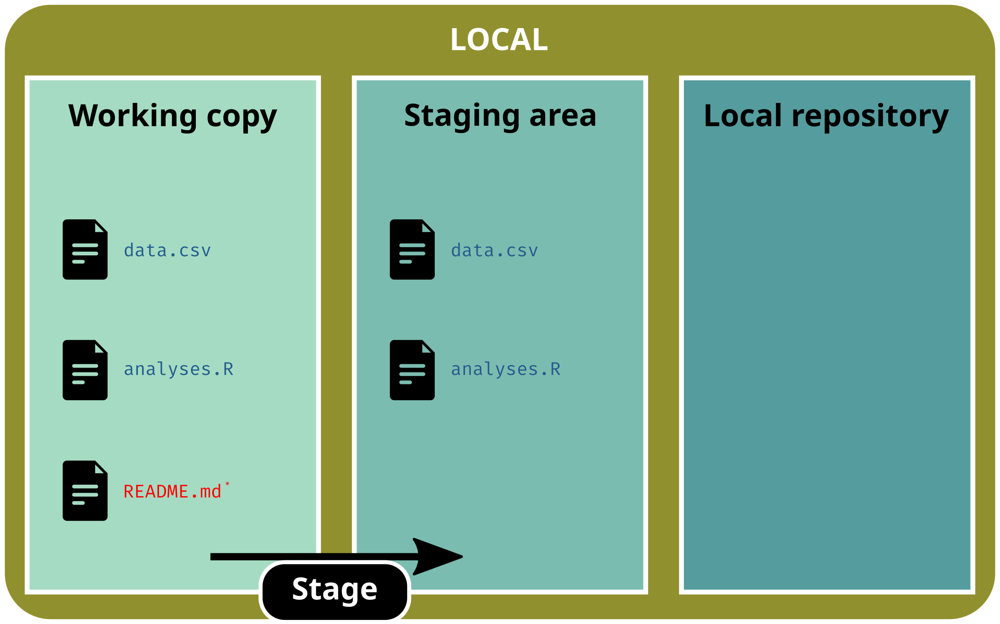

Reproducibility is about results that can be obtained by someone else (or you in the future) given the same data and the same code. This is a technical problem.
We talk about Computational reproducibility
Why does it matter?
An article about computational results is advertising, not scholarship. The actual scholarship is the full software environment, code and data, that produced the result.
Claerbout & Karrenbach (1992)1
Why does it matter?
An article about computational results is advertising, not scholarship. The actual scholarship is the full software environment, code and data, that produced the result.
Claerbout & Karrenbach (1992)1
Reproducibility has the potential to serve as a minimum standard for judging scientific claims (…).
Peng (2011)2
Why does it matter?
An article about computational results is advertising, not scholarship. The actual scholarship is the full software environment, code and data, that produced the result.
Claerbout & Karrenbach (1992)1
Reproducibility has the potential to serve as a minimum standard for judging scientific claims (…).
Peng (2011)2
Sharing the code and the data is now a prerequisite for publishing in many journals
Reproducibility spectrum
Source: Peng (2011)1
Each degree of reproducibility requires additional skills and time. While some of those skills (e.g. literal programming, version control, setting up environments) pay off in the long run, they can require a high up-front investment.
Concepts
According to Wilson et al. (2017)1, good practices for a better reproducibility can be organized into the following six topics:
Data management
Project organization
Tracking changes
Collaboration
Manuscript
Code & Software
Data management
Raw data
General recommendations1
Save and backup the raw data
Do not modify raw data (even for minor changes)
Raw data should be in a read-only mode (🔒)
Any modification produces an output or a derived data
Write code for data acquisition (when possible)
database requests
api requests
download.file(), wget, curl, etc.
Describe and document raw data (README, metadata, etc.)
Raw data
General recommendations1
Save and backup the raw data
Do not modify raw data (even for minor changes)
Raw data should be in a read-only mode (🔒)
Any modification produces an output or a derived data
Write code for data acquisition (when possible)
database requests
api requests
download.file(), wget, curl, etc.
Describe and document raw data (README, metadata, etc.)
« There are only two hard things in Computer Science: cache invalidation and naming things. »
Phil Karlton
Three principles for naming files1
Human readable
Machine readable
Regular expression and globbing friendly
avoid space and accented characters
good use of punctuation and case
First things first
« There are only two hard things in Computer Science: cache invalidation and naming things. »
Phil Karlton
Three principles for naming files1
Human readable
Machine readable
# File names ----files <-c("2020-survey_A.csv", "2021-survey_A.csv", "2021-survey_B.csv")# Extract years ----strsplit(files, "-") |># Split string by '-'lapply(function(x) x[1]) |># Get the first elementunlist() |># Convert to vectoras.numeric() # Convert to numeric
[1] 2020 2021 2021
First things first
« There are only two hard things in Computer Science: cache invalidation and naming things. »
Phil Karlton
Three principles for naming files1
Human readable
Machine readable
# File names ----files <-c("2020-survey_A.csv", "2021-survey_A.csv", "2021-survey_B.csv")# Extract years ----strsplit(files, "-") |># Split string by '-'lapply(function(x) x[1]) |># Get the first elementunlist() |># Convert to vectoras.numeric() # Convert to numeric
[1] 2020 2021 2021
# Extract surveys ----strsplit(files, "-") |># Split string by '-'lapply(function(x) x[2]) |># Get the second elementunlist() |># Convert to vectorgsub("survey_|\\.csv", "", x = _) # Clean output
[1] "A" "A" "B"
First things first
« There are only two hard things in Computer Science: cache invalidation and naming things. »
The goal of a research compendium is to provide a standard and easily recognisable way for organizing the digital materials of a project to enable others to inspect, reproduce, and extend the research.
Marwick B, Boettiger C & Mullen L (2018)1
Three generic principles
1. Files organized according to the conventions of the community
2. Clear separation of data, method, and output
3. Specify the computational environment that was used
A research compendium must be self-contained
Research compendium
Strong flexibility in the structure of a compendium
RStudio IDE will create a .Rproj (simple text file) file at the root of the folder
Double-click on a .Rproj file to open a fresh instance of RStudio, w/ the working directory pointing at the folder root
This will help you to create self-contained workspace (= compendium)
In a few slides, we will talk about setwd()
In the meantime
RStudio IDE - Minimal configuration for a better reproducibility
Tools > Global options > General
Never save your workspace as .RData Decide what you want to save and use save(), saveRDS(), write.csv(), etc.
In the meantime
RStudio IDE - Minimal configuration for a better reproducibility
Tools > Global Options > General
Never save your workspace as .RData Decide what you want to save and use save(), saveRDS(), write.csv(), etc.
Never save your command history Write your code in scripts not in the console
In the meantime
RStudio IDE - Minimal configuration for a better reproducibility
Tools > Global Options > General
Never save your workspace as .RData Decide what you want to save and use save(), saveRDS(), write.csv(), etc.
Never save your command history Write your code in scripts not in the console
Follow these two recommendations and use RStudio Project, and you’ll1:
never use again rm(list = ls())
never use again setwd()
What’s wrong with rm(list = ls())?1
Does NOT create a fresh session
It just deletes user-created objects from the global workspace
Other changes may have been made to the session, like options(), library(), etc.
You may get a wrong impression of reproducibility
The solution?
Write every script assuming it will be run in a fresh session
What’s wrong with setwd()?1
Usually used to create absolute paths
# Absolute path on Windowssetwd("C:\\Users\\janedoe\\Documents\\projectname")# Absolute path on MacOSsetwd("/Users/johndoe/Dropbox/work/projectname")# Absolute path on GNU/Linuxsetwd("/home/johnsmith/git-projects/projectname")
Not portable and not reproducible
The chance of the setwd() command having the desired effect – making the file paths work – for anyone besides its author is 0%. It’s also unlikely to work for the author one or two years or computers from now. The project is not self-contained and portable.
# Output of here::here() on Windowshere::here()## [1] "C:/Users/janedoe/Documents/project"# Output of here::here() on MacOShere::here()## [1] "/Users/johndoe/Dropbox/work/project"# Output of here::here() on GNU/Linuxhere::here()## [1] "/home/johnsmith/git-projects/project"
# Output of here::here() on Windowshere::here()## [1] "C:/Users/janedoe/Documents/project"# Output of here::here() on MacOShere::here()## [1] "/Users/johndoe/Dropbox/work/project"# Output of here::here() on GNU/Linuxhere::here()## [1] "/home/johnsmith/git-projects/project"
Use the package here to create project-relative paths
# Output of here::here() on Windowshere::here()## [1] "C:/Users/janedoe/Documents/project"# Output of here::here() on MacOShere::here()## [1] "/Users/johndoe/Dropbox/work/project"# Output of here::here() on GNU/Linuxhere::here()## [1] "/home/johnsmith/git-projects/project"
Use the package here to create project-relative paths
here will search for a .Rproj file (or a .here file) to define the working directory
The DESCRIPTION file
Main component of an package, the DESCRIPTION file can be added to a research compendium to describe project metadata
Package: projectname
Type: Package
Title: The Title of the Project
Authors@R: c(
person(given = "John",
family = "Doe",
role = c("aut", "cre", "cph"),
email = "john.doe@domain.com",
comment = c(ORCID = "9999-9999-9999-9999")))
Description: A paragraph providing a full description of the project.
License: GPL (>= 2)
The DESCRIPTION file
Main component of an package, the DESCRIPTION file can be added to a research compendium to describe project metadata
Package: projectname
Type: Package
Title: The Title of the Project
Authors@R: c(
person(given = "John",
family = "Doe",
role = c("aut", "cre", "cph"),
email = "john.doe@domain.com",
comment = c(ORCID = "9999-9999-9999-9999")))
Description: A paragraph providing a full description of the project.
License: GPL (>= 2)
Imports:
devtools,
here
It can be used to list all external packages required by the project
You should consider the DESCRIPTION file as the only file to list your external packages
Do not use library() or install.packages() anymore
Dealing w/ dependencies
To call a function (bar()) from an external package (foo), usually you use the function bar() after calling library("foo")
But,
for readability purposes, it’s not perfect (where does the function bar() come from?)
you can have a conflict w/ a function also named bar() but from the package baz also attached with library(). You are not sure which function you are really using.
library("tidyverse")## ── Attaching core tidyverse packages ──────────────────────────────────────────────────────────────────────────────────── tidyverse 2.0.0 ## ──## ✔ dplyr 1.1.2 ✔ readr 2.1.4## ✔ forcats 1.0.0 ✔ stringr 1.5.0## ✔ ggplot2 3.4.2 ✔ tibble 3.2.1## ✔ lubridate 1.9.2 ✔ tidyr 1.3.0## ✔ purrr 1.0.1 ## ── Conflicts ────────────────────────────────────────────────────────────────────────────────────────────────────── tidyverse_conflicts() ## ──## ✖ dplyr::filter() masks stats::filter()## ✖ dplyr::lag() masks stats::lag()## ℹ Use the conflicted package to force all conflicts to become errors
A solution to prevent conflict is to call an external function as foo::bar()
library() will load and attach a package
:: will just load a package
Dealing w/ dependencies
In the DESCRIPTION file,
list external packages under the tag Imports if you call functions as foo::bar() - recommended
list external packages under the tag Depends if you want to attach a package (e.g. ggplot2)
Package: projectname
Type: Package
Title: The Title of the Project
Authors@R: c(
person(given = "John",
family = "Doe",
role = c("aut", "cre", "cph"),
email = "john.doe@domain.com",
comment = c(ORCID = "9999-9999-9999-9999")))
Description: A paragraph providing a full description of the project.
License: GPL (>= 2)
Depends:
ggplot2
Imports:
devtools,
here
With this setting, you will use ggplot() but here::here() in your code
Have a look at the tag Remotes to list packages only available on GitHub, GitLab, etc.
Dealing w/ dependencies
Editing the DESCRIPTION file is not enough to install and access external packages.
You have to run these two command lines:
# Install missing packages ----devtools::install_deps()# Load and attach (if Depends is used) packages ----devtools::load_all()
Or
# Install missing packages ----remotes::install_deps()# Load and attach (if Depends is used) packages ----pkgload::load_all()
If you don’t want to upgrade your packages, use remotes::install_deps(upgrade = "never")
Wrap-up: w/ a DESCRIPTION file and the functions install_deps() and load_all(), no need to use library() or install.packages() anymore
The README file
A README is a text file that introduces and explains your project
each research compendium should contain a README
you can write different README (project, data, etc.)
Each snapshot can contain changes for one or many file(s)
User chooses which files to ‘save’ in a snapshot and when (!= file hosting services like Dropbox, Google Drive, etc.)
In the git universe, a snapshot is a version, i.e. the state of the whole project at a specific point in time
A snapshot is a two-step process:
Stage files: select which files to add to the version
Commit changes: save the version and add metadata (commit message)
Basic workflow
Initialize git in a (empty) folder (repository)
git init
The three areas of a gitrepository:
working copy: current state of the directory (what you actually see)
staging area: selected files that will be added to the next version
repository: area w/ all the versions (the .git/ subdirectory)
Basic workflow
Add new files in the repository

git status# On branch main# # No commits yet# # Untracked files:# README.md# analyses.R# data.csv# # Nothing added to commit but untracked files present# Use "git add <file>..." to track
Basic workflow
Stage (select) one file
git add data.csv
git status# On branch main# # No commits yet# # Changes to be committed:# (use "git rm --cached <file>..." to unstage)# new file: data.csv# # Untracked files:# (use "git add <file>..." to track)# README.md# analyses.R
Basic workflow
Stage (select) several files

git add data.csv analyses.R
git status# On branch main# # No commits yet# # Changes to be committed:# (use "git rm --cached <file>..." to unstage)# new file: analyses.R# new file: data.csv# # Untracked files:# (use "git add <file>..." to track)# README.md
Basic workflow
Stage (select) all files
git add .
git status# On branch main# # No commits yet# # Changes to be committed:# (use "git rm --cached <file>..." to unstage)# new file: analyses.R# new file: data.csv# new file: README.md
Basic workflow
Commit changes to create a new version
git commit -m"a good commit message"
Basic workflow
Now we are up-to-date
git status# On branch main# nothing to commit, working tree clean
The status of a file
With git a file can be untracked or tracked1. If it’s tracked it can be:
unmodified
modified and unstaged
modified and staged
The .gitignore
We can also tell git to ignore specific files: it’s the purpose of the .gitignore file
Which files? For instance:
passwords, tokens and other secrets
temporary files
build files
large files
The syntax is simple:
# Ignore a specific fileREADME.html# Ignore all PDF*.pdf# Ignore a folderdata/# Ignore a subfolderdata/raw-data/# Ignore a specific file in a subfolderdata/raw-data/raw-data.csv
A commit message has a title line, and an optional body
# Commit message w/ title and bodygit commit -m"title"-m"body"# Commit message w/ only titlegit commit -m"title"
Commit message
A commit message has a title line, and an optional body
# Commit message w/ title and bodygit commit -m"title"-m"body"# Commit message w/ only titlegit commit -m"title"
What is a good commit message?
A good commit title:
should be capitalized (according to the gitdocumentation)
should be short (less than 50 characters)
should be informative and unambiguous
should use active voice and present tense
An optional body can be added to provide detailed information and to link external references (e.g. issue, pull request, etc.)
Commit message
A commit message has a title line, and an optional body
# Commit message w/ title and bodygit commit -m"title"-m"body"# Commit message w/ only titlegit commit -m"title"
What is a good commit message?
A good commit title:
should be capitalized (according to the gitdocumentation)
should be short (less than 50 characters)
should be informative and unambiguous
should use active voice and present tense
Template provided by git:
Capitalized, short (50 chars or less) summaryMore detailed explanatory text, if necessary. Wrap it to about 72characters or so. In some contexts, the first line is treated as thesubject of an email and the rest of the text as the body. The blankline separating the summary from the body is critical (unless you omitthe body entirely); tools like rebase will confuse you if you run thetwo together.Write your commit message in the imperative: "Fix bug" and not "Fixed bug" or "Fixes bug." This convention matches up with commit messages generated by commands like git merge and git revert.Further paragraphs come after blank lines.- Bullet points are okay, too- Typically a hyphen or asterisk is used for the bullet, followed by a single space, with blank lines in between, but conventions vary here- Use a hanging indentLink external references as: Fix #23
An optional body can be added to provide detailed information and to link external references (e.g. issue, pull request, etc.)
When should you commit?
When should you commit?
Commit a new version when you reach a milestone
Create small and atomic commits
Commit a state that is actually working
Undoing things
1. Undo recent, uncommitted and unstaged changes
You have modified a file but have not staged changes and you want to restore the previous version
git status# On branch main# Changes not staged for commit:# (use "git add <file>..." to stage changes)# (use "git restore <file>..." to discard changes)# modified: data.csv## No changes added to commit
Undoing things
1. Undo recent, uncommitted and unstaged changes
You have modified a file but have not staged changes and you want to restore the previous version
# Restore one file (discard unstaged changes)git restore data.csv
git status# On branch main# Nothing to commit, working tree clean
Undoing things
1. Undo recent, uncommitted and unstaged changes
You have modified a file but have not staged changes and you want to restore the previous version
# Restore one file (discard unstaged changes)git restore data.csv
git status# On branch main# Nothing to commit, working tree clean
To discard all changes:
# Cancel all non-staged changesgit restore .
Undoing things
2. Unstaged uncommitted files
You have modified and staged file(s) but have not committed changes yet and you want to unstage file(s) and restore the previous version
git status# On branch main# Changes to be committed:# (use "git restore --staged <file>..." to unstage)# modified: data.csv
Undoing things
2. Unstaged uncommitted files
You have modified and staged file(s) but have not committed changes yet and you want to unstage file(s) and restore the previous version
# Unstage one filegit restore --staged data.csv
git status# On branch main# Changes not staged for commit:# (use "git add <file>..." to stage changes)# (use "git restore <file>..." to discard changes)# modified: data.csv## No changes added to commit
Undoing things
2. Unstaged uncommitted files
You have modified and staged file(s) but have not committed changes yet and you want to unstage file(s) and restore the previous version
# Unstage one filegit restore --staged data.csv
git status# On branch main# Changes not staged for commit:# (use "git add <file>..." to stage changes)# (use "git restore <file>..." to discard changes)# modified: data.csv## No changes added to commit